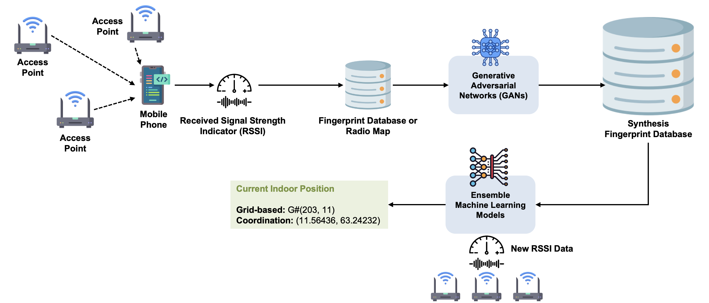
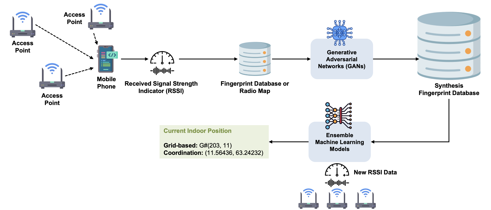

Enhancing the Performance of the Wi-Fi-based Indoor Positioning Systems
Innovating a new way of data collection and synthetic data integration in IPS fingerprint database creation and training process.
 

Project Abstract
In this internship student, enhancing the performance of Wi-Fi-based IPS, we aimed to overcome the major drawbacks of the fingerprinting technique — the time-consuming and limited data points for fingerprint database creation. This project is divided into two approaches: Building an automatic data collection application on mobile phone, and a data synthesis method for RSSI data points. Abstracts of those approaches are detailed below.
Building RSSI-based Indoor Positioning Fingerprint Maps using Android-based Coordination.
Indoor positioning systems (IPS) have emerged as a critical technology for location-based applications. Developing IPS system is challenging since technologies for outdoor positioning seem to be limited in indoor environment. Fingerprinting is a technique to build an offline map and compare the current location with it. While fingerprinting remains a popular technique for indoor positioning, its reliance on extensive manual data collection is a significant challenge. These data points can be the Received Signal Strength Indicator (RSSI) of the Wi-Fi signal or signals from the triangulation of Bluetooth/cellular beacons. However, the conventional grid-based fingerprint technique is facing challenges when the target area is being large. This research proposes an automated approach to gathering Wi-Fi RSSI data for building indoor positioning maps using the Android-based triangulated coordination. Our method demonstrates a substantial reduction in data collection time (79%) compared to traditional grid-based techniques. The resulting dataset effectively supports machine learning models for indoor positioning, achieving a Mean Distance Error (MDE) of less than 2 meters different.
Time Reduction for Collecting Fingerprint Data in Indoor Positioning Systems with Generated Synthetic Data by Ensemble Models and GANs.
Nowadays, the demand for IPS is growing due to the increasing need for accurate indoor location services in applications. The IPS fingerprint techniques are widely popular because they offer high accuracy. However, the process of collecting fingerprint data is labor-intensive and time-consuming. This study aims to alleviate the burden of data collection by generating synthetic data using Machine Learning (ML) and Generative Adversarial Networks (GANs). To create ML synthetic data, we used a dataset containing RSSI values and coordinates. Various regression models were trained using Randomized Search for hyperparameter tuning. The best models were then combined into an ensemble method using Voting Regressor. This ensemble model was used to predict RSSI values for new, synthetic coordinates generated around each reference point, forming the synthetic dataset. We combined synthetic data with actual data from the IPS fingerprint RSSI collecting from the mobile application to create three new datasets with varying ratios of actual to synthetic data from 90:10 to 10:90. These combined datasets were used to train models including Random Forest, Decision Tree, Linear Regression, Gradient Boosting, and K Nearest Neighbors. Our results indicate that models trained on combined datasets significantly reduce the mean distance error (MDE) compared to those trained solely on actual data. This improved performance, however, comes with trade-offs in terms of slightly increased training time, prediction time, and memory usage during both training and prediction phases.
Project information
- Category Internship Student Project
- Project date Mar 2024 to Dec 2024
- Team Member Lapat Nakpaen, Noon
Prab Wongsekleo, Prab - Project Advisor Dr. Charnon Pattiyanon
Assoc. Prof. Dr. Panarat Cherntanomwong